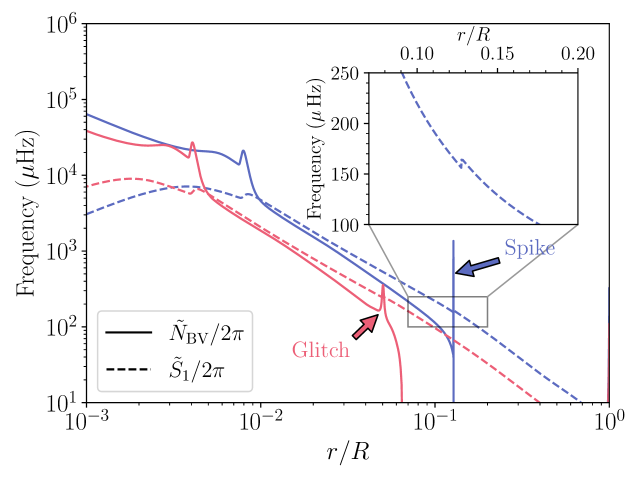
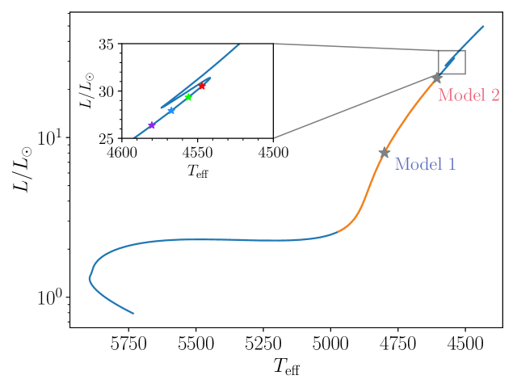
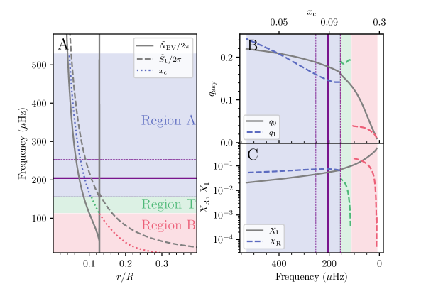
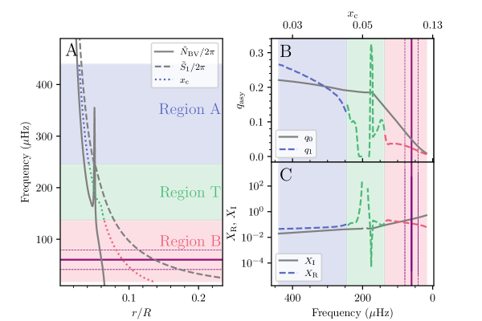
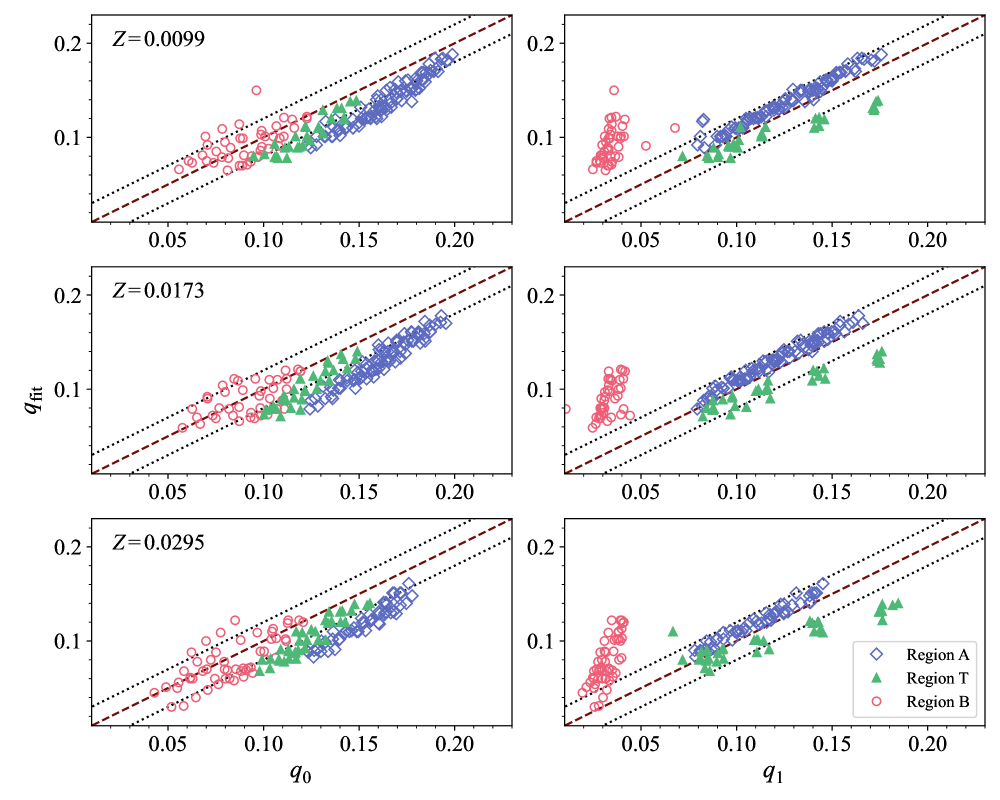
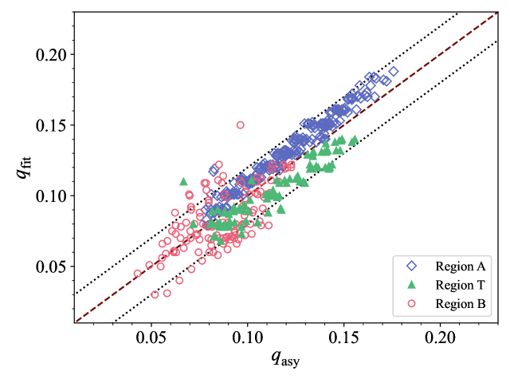
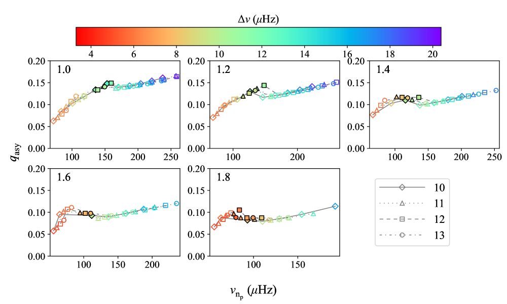
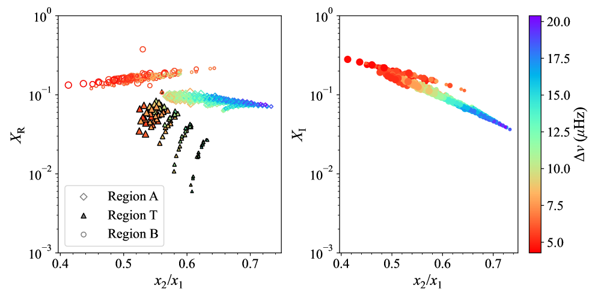
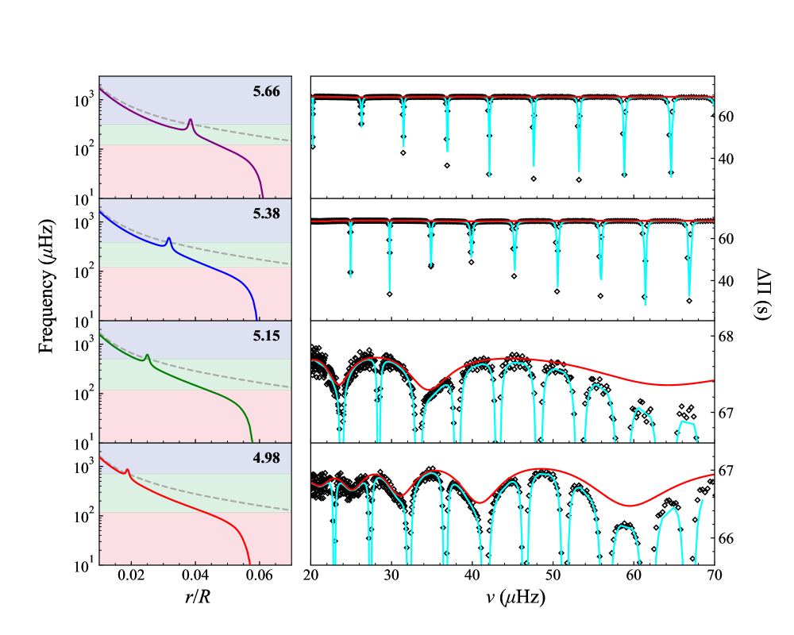
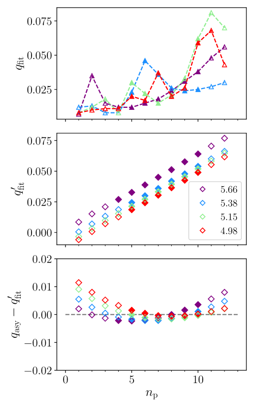

تطور عامل اقتران الأنماط المختلطة ثنائية القطب في النجوم العملاقة الحمراء: أثر النتوء الطفوي
الملخص
تتيح الأنماط المختلطة المرصودة في النجوم العملاقة الحمراء دراسة البنى الداخلية النجمية. وتمثل إحدى السمات المهمة في هذه البنى النتوء الطفوي الناجم عن انقطاع تدرج التركيب الكيميائي المتروك خلال التجريف الأول. يظهر النتوء الطفوي عند قاعدة المنطقة الحملية في العمالقة الحمراء منخفضة اللمعان، ثم يتحول لاحقاً إلى خلل عندما يتمدد تجويف أنماط الجاذبية ليشمل النتوء. ندرس هنا أثر النتوء الطفوي في الأنماط المختلطة ثنائية القطب باستخدام نماذج نجمية ذات خصائص مختلفة. ونجد أن قابلية تطبيق الصيغ التقاربية لعامل الاقتران، ، تتغير تبعاً لموضع منطقة التلاشي بالنسبة إلى موضع النتوء. وتظهر انحرافات مهمة بين قيمة المستنتجة من ملاءمة ترددات التذبذب وأي من الصيغ المقترحة في الأدبيات، في النماذج ذات الفصل الترددي الكبير ضمن المجال من 5 إلى 15 Hz، مع مناطق تلاشي واقعة في منطقة انتقالية قد تكون رقيقة أو سميكة. ومع ذلك، يبقى من الممكن التوفيق بين والتنبؤات المستمدة من الصيغ التقاربية باختيار الصيغة المستخدمة وفقاً لقيمة . وبالنسبة إلى النجوم التي تقترب من نتوء اللمعان، يصبح النتوء الطفوي خللاً ويؤثر بقوة في ترددات الأنماط. إن ملاءمة الترددات من دون أخذ الخلل في الحسبان تؤدي إلى تغيرات غير فيزيائية في المستنتج، غير أننا نبين أن ذلك يُصحح عند احتساب الخلل على نحو ملائم في الملاءمة.
keywords:
النجوم: البنى الداخلية - النجوم: التذبذبات - النجوم: التطور.1 مقدمة
إن الوفرة الكبيرة من بيانات علم الزلازل النجمية الطويلة، شبه المتواصلة، والعالية الدقة التي حصلت عليها بعثات فضائية مثل CoRoT (Baglin et al., 2006) وKepler (Borucki et al., 2010) تتيح لنا دراسة البنية الداخلية للنجوم بتحليل الأنماط المختلطة ثنائية القطب المرصودة (أي الأنماط ذات الدرجة الزاوية ) ذات الطبيعة المختلطة بين الضغط والجاذبية. وتُرصد الأنماط المختلطة على نطاق واسع في نجوم ما دون العملاقة والنجوم العملاقة الحمراء، حيث تزداد عجلة الجاذبية المحلية، ومن ثم تردد الطفو، بسبب التكاثف الشديد في اللب. وهذا يفتح إمكان حدوث المزج بين موجات الضغط وموجات الجاذبية. وقد رُصدت الأنماط المختلطة في نجوم فرع ما دون العملاقة (SGB) ونُمذجت أولاً في Boo (Christensen-Dalsgaard, Bedding & Kjeldsen, 1995; Kjeldsen et al., 1995a, 2003; Guenther & Demarque, 1996; Carrier, Eggenberger & Bouchy, 2005) و Hyi (Bedding et al., 2007; Brandão et al., 2011)، بينما دُرست تلك الموجودة على فرع العمالقة الحمراء (RGB) على نطاق واسع باستعمال بيانات CoRoT وKepler (مثلاً، Hekker et al., 2009; Bedding et al., 2010; Huber et al., 2010; Jiang et al., 2011; Mathur et al., 2011; Mosser et al., 2011; Baudin et al., 2012; Kallinger et al., 2012). وتحمل طبيعة نمط الجاذبية (g-mode) في الأنماط المختلطة معلومات فيزيائية عن منطقة اللب. ومن خلال تحديد تباعد فترات أنماط الجاذبية () للأنماط المختلطة في العمالقة الحمراء أمكن سبر بنية اللب (Bedding et al., 2011)، كما أتاح التعرف إلى انقسامات التردد مراقبة دورانه (Beck et al., 2012; Mosser et al., 2012a) للمرة الأولى. وقد استفادت دراسات تباعد الفترات من قياسات واسعة النطاق (Datta et al., 2015; Vrard et al., 2016) لرصود طويلة المدة. ومن جهة أخرى، تسمح طبيعة نمط الضغط (p-mode) للموجات باختراق الجزء الخارجي من النجوم ومن ثم تصبح قابلة للرصد (Christensen-Dalsgaard, 2014).
يمكن قياس المزج بين أنماط الضغط والجاذبية بواسطة عامل الاقتران عديم البعد ()، المرتبط بحجم منطقة التلاشي (EVZ) بين تجويف أنماط الضغط الذي تكون فيه التذبذبات موجودة والضغط هو قوة الإرجاع، وتجويف أنماط الجاذبية الذي يكون فيه الطفو هو قوة الإرجاع. وفي EVZ يكون للتذبذبات سلوك أسي، ومن ثم تكون متلاشية (Aerts, Christensen-Dalsgaard & Kurtz, 2010). وقد ثبت أن عامل الاقتران مشخص زلزالي مفيد للبنية الداخلية لنجوم RGB في دراسات كثيرة للأنماط المختلطة (e.g., Mosser et al., 2012a; Jiang & Christensen-Dalsgaard, 2014; Hekker & Christensen-Dalsgaard, 2017; Mosser et al., 2017; Pinçon et al., 2020). وبافتراض أن لا يتغير إلا قليلاً مع تردد النمط بالنسبة إلى الأنماط القابلة للرصد، أُنجزت القياسات الأولى لـ لنجوم RGB متطورة رصدها Kepler (Mosser et al., 2012b; Buysschaert et al., 2016) عن طريق ملاءمة التعبير التقاربي لنمط ترددات الأنماط المختلطة، الذي اشتقه Shibahashi (1979, فيما يلي S79)، مع الرصود. واستناداً إلى التعبير التقاربي نفسه، قاس Jiang et al. (2020a, فيما يلي J20) للأنماط المختلطة الفردية في نماذج RGB عند مراحل تطورية مختلفة، ووجد أن اعتماد على التردد ليس مهملاً في نجوم RGB، وهو ما أوردته أيضاً أعمال سابقة (Jiang & Christensen-Dalsgaard, 2014; Hekker et al., 2018; Cunha et al., 2019).
اشتُقت الصيغة التقاربية لـ من S79 تحت افتراض أن EVZ سميكة جداً، ومن ثم فإن الاقتران ضعيف، كما هو متوقع في نجوم RGB المتطورة. غير أن هذا لا ينطبق على النجوم العملاقة منخفضة اللمعان قرب الانتقال بين SGB وRGB، ولا على نجوم التجمع الأحمر (Mosser et al., 2017) التي يكون الاقتران فيها قوياً. وقد تحقق تقدم مهم على يد Takata (2016, فيما يلي T16) الذي أولى عناية خاصة لحالة الاقتران القوي. اشتق T16 صيغة تقاربية لـ للأنماط المختلطة ثنائية القطب باستخدام طريقة JWKB (Jeffreys, Wentzel, Kramers, and Brillouin)، مع أخذ الاضطراب في الجهد الثقالي في الحسبان. وبهذه الطريقة يمكن أن يأخذ التقاربي المشتق قيماً كبيرة قريبة من 1 (لكن لا تتجاوزها) في الحالة الحدية للاقتران الشديد القوة. وقد قارن Hekker et al. (2018) بين المحسوب باستخدام الصيغة التقاربية من T16 والقيمة المستخلصة بملاءمة ترددات الأنماط وفق الصيغة التي اقترحها Christensen-Dalsgaard (2012) وطوّرها لاحقاً Jiang & Christensen-Dalsgaard (2014) وCunha et al. (2015) وHekker & Christensen-Dalsgaard (2017)، وهي وصف بديل للتعبير التقاربي الذي استخدمه Mosser et al. (2012b). ووجد Hekker et al. (2018) أن قيم التقاربية أصغر بكثير من القيم الملائمة في نماذج RGB المتطورة حيث يكون تردد القدرة العظمى () منخفضاً، وهو ما أشار إليه أيضاً عمل سابق لـMosser et al. (2017). وتابع J20 تطور المستحصل عليه بملاءمة التعبير التقاربي للأنماط المختلطة مع الترددات النظرية، ووجد أن يتناقص عموماً مع التطور النجمي في نماذج RGB الفتية ومتوسطة العمر، ثم يتبعه هبوط حاد في نماذج RGB الأكثر تطوراً. ويرتبط ذلك ببنية الطبقات الوسطى الواقعة بين قشرة احتراق الهيدروجين وجوار قاعدة المنطقة الحملية (BCZ) في العمالقة الحمراء. وقد دُرست العلاقة بين والطبقات الوسطى للعمالقة الحمراء في مراحل مختلفة دراسة وافية في Pinçon et al. (2020). وأظهروا أن قيم تعتمد على حجم EVZ وعلى طول مقياس الكثافة المحلي. وعلى وجه التحديد، فإن اتساع EVZ هو المسؤول الرئيس عن التناقص المرصود في في العمالقة الحمراء المتطورة ذات متوسطات الفصل الترددي الكبير . وعلاوة على ذلك، أشار Pinçon et al. (2020) أيضاً إلى أن الصيغة التقاربية المشتقة سواء من S79 أو T16 ليست الحل الأمثل لحالة اقتران متوسطة تكون فيها EVZ بين الرقيقة جداً والسميكة.
إحدى السمات المهمة لبنية الطبقات الوسطى هي التغير البنيوي الناتج من تطور الغلاف الحملي. في نجوم ما دون العملاقة والعمالقة الحمراء المبكرة يزداد عمق الغلاف الحملي بالكتلة مع العمر فيما يسمى التجريف الأول، فيصل إلى مناطق عُدّل تركيبها بفعل التفاعلات النووية. وفي النماذج التي لا تتضمن الانتشار ينشأ عن ذلك انقطاع في وفرة الهيدروجين ومن ثم في الكثافة، مما يسبب نتوءاً في تدرج الكثافة وبالتالي في تردد الطفو عند BCZ. ومع مزيد من التطور يتراجع الغلاف الحملي في الكتلة، تاركاً خلفه انقطاع التركيب والنتوء في المنطقة الإشعاعية ومن ثم ربما في تجويف أنماط الجاذبية. وعندما تقترب قشرة احتراق الهيدروجين من الانقطاع وتبدأ في الإحساس بانخفاض الوزن الجزيئي المتوسط فوق الانقطاع، ينخفض اللمعان مؤقتاً مع التطور، مسبباً نتوء العملاق الأحمر، إلى أن تصل القشرة إلى الانقطاع وتزيله (Christensen-Dalsgaard, 2015). إذا كان النتوء في تجويف أنماط الجاذبية فإنه يتخذ صفة ما يسمى خلل طفوي، ويمكن أن يؤثر بدرجة كبيرة في خصائص الأنماط المختلطة خلال طور النتوء (Cunha et al., 2015). تتغير ترددات الأنماط وعطالاتها، وبالتالي تتغير أيضاً قيمة المستنتجة إذا لم يُحتسب أثر الخلل صراحة. غير أن هذا التغير البنيوي النتوئي (الحاد والصغير المقياس) في نجوم RGB منخفضة اللمعان، قبل وصول النجم إلى نتوء اللمعان بزمن طويل، يظهر في تردد الطفو عند BCZ مباشرة، ومن ثم خارج تجويف أنماط الجاذبية بالنسبة إلى أنماط التذبذب المرصودة. وعلى الرغم من أن النتوء الطفوي لا يقع في التجويف التذبذبي وله لذلك أثر ضئيل في خصائص الأنماط المختلطة المرصودة، فإنه يؤثر فعلاً في الترددات المميزة في الطبقات الوسطى، وهي حاسمة للتحليل التقاربي للأنماط المختلطة. ولم يُنظر لا في الخلل ولا في البنية النتوئية صغيرة المقياس في تحليل Pinçon et al. (2020). ولذلك تلزم دراسة شاملة لـ لتلك النجوم من نوع RGB التي تسبق نتوء RGB، من أجل احتساب وجود النتوء الطفوي وأثره.
في هذه الورقة نتابع تطور عامل الاقتران باستخدام نماذج نظرية تُظهر نتوءاً في ترددات الطفو، بهدف دراسة العلاقة بين عامل الاقتران والبنية الداخلية النجمية. ونركز على المناطق القريبة من قاعدة المنطقة الحملية، مستكشفين تفسيراً يفسر الاختلاف بين عامل الاقتران التقاربي وعامل الاقتران الملائم. وتنظم الورقة على النحو الآتي. يعرض القسم 2 إطار تحليلنا. ونستخدم الصيغ التقاربية من S79 وT16 لحساب قيم تقاربية لـ ثم نقارنها مع الملائم المستحصل عليه من J20. أما تطور فيُناقش في القسم 3، مع التشديد على أثر النتوء الطفوي. وفي القسم 4 نناقش على وجه الخصوص أثر الخلل الطفوي في الملائم للنماذج التي تقترب من النتوء، وذلك بملاءمة الخلل بالطريقة المتبعة في Cunha et al. (2015, 2019). وأخيراً يُعرض ملخص في القسم 5.
2 التحليل التقاربي للأنماط المختلطة
2.1 الصيغ التقاربية
ترتبط التذبذبات المرصودة في النجوم العملاقة الحمراء المتطورة بمنطقة EVZ سميكة جداً، كما افترضت عادة الأعمال السابقة (Tassoul, 1980; Unno et al., 1989)، وبالتالي بحالة اقتران شديد الضعف. ووفقاً لـS79 يُعطى عامل الاقتران في حالة الاقتران الضعيف تقاربياً بالعلاقة
| (1) |
حيث إن حد تكاملي يُحسب عبر الطبقات التي تشمل EVZ (المعرفة في الملحق A). ومن ثم تكون قيمة نظرياً بين 0 و0.25، وترتبط بقوة بعرض EVZ، الذي يحدده تردد النمط والترددان المميزان: تردد برنت-فايسالا (، ويسمى أيضاً تردد الطفو) وتردد لامب (، حيث درجة النمط) 11 1 نلاحظ أن النسخ المعدلة من الترددين المميزين (المعادلة (2)) تُستخدم هنا في تعريف . ومع ذلك نشير إلى المعادلة (1) باسم S79 في كامل الورقة.. وتنتج EVZ الأسمك عموماً اقتراناً أضعف للأنماط المختلطة، ومن ثم قيمة أصغر لـ. أما في الحالة الحدية المقابلة لمنطقة EVZ رقيقة جداً، فإن المعادلة (1) لا تعود صالحة لتقدير عامل الاقتران.
درس T16 الحالة الحدية لمنطقة EVZ رقيقة جداً، أي اقتراناً شديد القوة، وهي الحالة التي تُرصد عادة في نجوم ما دون العملاقة والعمالقة الحمراء الفتية وكذلك في نجوم التجمع. وقد أخذ T16 في الحسبان تماماً أثر الاضطراب في الجهد الثقالي الذي يهمله تقريب كاولنغ (Cowling, 1941) في S79، وقدم صيغة تقاربية لعامل الاقتران في حالات الاقتران القوي هذه. وتستخدم صيغة T16 نسخة معدلة من الترددين المميزين اللذين قدمهما Takata (2006)، لتجنب تقريب كاولنغ، ويُعرَّفان كما يلي
| (2) |
حيث إن هو تردد لامب العادي للأنماط ، و يُعرَّف بالعلاقة
| (3) |
مع كون الكتلة المتراكزة المحصورة داخل نصف القطر . والكثافة المتوسطة للكتلة المتراكزة أكبر من الكثافة عند نصف القطر ، إلا عند المركز. ونتيجة لذلك يكون دائماً أكبر من ، ومن ثم يكون موجباً لكنه لا يتجاوز الوحدة أبداً22 2 عندما يكون ، تعيد المعادلة (2) إنتاج النسخة العادية من الترددين المميزين، ومن ثم تفترض تقريب كاولنغ.. لذلك فإن و ينتجان EVZ أضيق قليلاً من نظيريهما العاديين. في الشكل 1 تُعرض و لنموذجين من RGB كتلتهما 1.0 : نموذج فتي (النموذج 1) أدنى بكثير من نتوء RGB، ونموذج متطور (النموذج 2) أقرب إلى النتوء (توضح مواضع النموذجين في مخطط HR في الشكل 2). من حيث المبدأ، تنتقل الموجات الصوتية في تجويف خارجي حيث يكون تردد النمط الزاوي و)، بينما تنتشر موجات الجاذبية في تجويف إشعاعي مركزي أسفل الغلاف الحملي حيث و). وتقع EVZ، حيث يكون سلوك النمط أُسياً، بين منحنيي و. تُحدَّد منطقة تكامل بالواجهات الفاصلة بين مناطق الانتشار وEVZ، حيث لدينا و اللتان يشار إليهما بنقطتي الانعطاف، ويكون نصف القطر الكسري لهما و على الترتيب. ووفقاً لصيغة T16 الجديدة، تُعرَّف القيمة التقاربية لعامل الاقتران في حالة EVZ رقيقة بالعلاقة
| (4) |
ويرتبط المتغير بالبنية الداخلية النجمية، ويعرّفه T16 كما يلي
| (5) |
وفيه يرتبط الحد ارتباطاً وثيقاً بتدرج الترددين المميزين قرب مركز EVZ (انظر الملحق A للتفاصيل). وتعتمد نقطتا الانعطاف و على التردد. أما مركز EVZ، ، فيُعرّف بمعنى T16 بأنه ، ومن ثم فهو يعتمد أيضاً على التردد.
بالمقارنة مع المعادلة (1)، يكون الحد الجديد في المعادلة (5) مهماً في حالة EVZ رقيقة، وإلا فإن يهيمن عليه الحد التكاملي في حالة EVZ سميكة. إن موجب ولا يبلغ أبداً 0 بالضبط بسبب الموجب، ولذلك يكون دائماً أصغر من الوحدة. ويتقارب الحد التقاربي للمعادلتين (1) و (4) عندما يكون ، وهو ما يقابل اقتراناً شديد الضعف كما يُرى في نجوم RGB المتطورة. ومع ذلك، فإن المقارنة بين الصيغ الواردة في المعادلتين (1) و (4)، وكذلك دراسة مدى قابليتها للتطبيق على نجوم RGB الحقيقية أو النماذج النجمية ذات الأنواع المختلفة من EVZ، ما تزال غير موجودة، ومن ثم فهي مطلوبة. إضافة إلى ذلك، تفترض هذه الصيغ التقاربية أن البنية الخلفية للنجم ملساء على مقاييس تقارن بالطول الموجي المحلي (طول التناقص الأسي) للنمط في منطقة الانتشار (منطقة التلاشي). لذلك يُتوقع أن تفشل في الحالات التي تظهر فيها تغيرات بنيوية حادة في تردد الطفو، مثل تلك المعروضة في الشكل 1. وعليه فمن المهم فهم ما إذا كان أي من أو المحسوبين من النماذج ما يزال يمثل جيداً الاقتران المستنتج من ملاءمة الترددات في هذه الحالات. وإذا لم يكن الأمر كذلك، فتلزم صيغة تصحح التحليل التقاربي لحضور النتوء.
2.2 الطريقة
تُقيّم آثار النتوء الطفوي في الأنماط المختلطة بمقارنة التقاربي مع الملائم لنماذج RGB ذات خصائص وأعمار مختلفة. هنا يُشتق من صيغتي المعادلتين (1) و (4) المعروضتين في القسم 2.1، بينما يُستحصل على من J20 بملاءمة الترددات الدورية النظرية للأنماط ثنائية القطب () باستخدام الصيغة التي قدمها Mosser et al. (2012b)،
| (6) |
حيث إن هي القيمة التقاربية لتباعد فترات أنماط الجاذبية، و هو الحل غير المقترن لنمط الضغط ذي الرتبة الشعاعية ، أما إزاحة الجاذبية فترتبط بخصائص EVZ في نجوم RGB.
في هذا التحليل نواصل استخدام النماذج التي نوقشت في J20. حُسب في المجموع نحو 500 نموذجاً بكتل ابتدائية مختلفة ( مع خطوة مقدارها 0.2 ) وثلاث وفْرات كيميائية ( و0.0173 و0.0295)، تغطي جزءاً من RGB على كل مسار تطوري، ابتداءً من الانتقال بين SGB وRGB إلى نقطة قريبة من نتوء اللمعان (انظر الشكل 2 لتوضيح مسار التطور ). أُنتجت النماذج باستخدام Aarhus STellar Evolution Code (ASTEC, Christensen-Dalsgaard, 2008a) والترددات التذبذبية المناظرة باستخدام Aarhus adiabatic oscillation package (ADIPLS, Christensen-Dalsgaard, 2008b). وعولج الحمل بافتراض نظرية طول المزج (Böhm-Vitense, 1958)، وثُبّتت قيمة معامل طول المزج 1.96 المستحصلة من معايرة النماذج الشمسية لجميع النماذج. وللفيزياء الداخلة الأخرى نحيل إلى القسم 3 من J20، لكننا نلاحظ أن الامتداد فوق الحمل، والانتشار، والدوران لم تؤخذ في الحسبان في النماذج. تُستخدم كل من المعادلتين (1) و (4) لاشتقاق لجميع نماذج RGB المختارة على امتداد مسارات التطور. وقد عُرض إجراء ملاءمة في القسم 4 من J20 باستخدام أداة العينة البايزية المتداخلة Diamonds (Corsaro & De Ridder, 2014).
3 تطور عامل الاقتران
من دراسة تحليلية للأنماط المختلطة وEVZ، خلص Pinçon et al. (2020) إلى أن قيمة عامل الاقتران تعتمد عموماً على سماكة EVZ وكذلك على طول مقياس الكثافة المحلي. في هذا القسم نناقش أولاً اعتماد عامل الاقتران على التردد باستخدام نموذجي RGB الموضحين في الشكل 2، وباستعمال الصيغ التقاربية المعطاة في القسم 2.1، ونوضح كيف ترتبط المناطق المختلفة من EVZ بخصائص الأنماط المختلطة. ثم نتحقق من قابلية تطبيق الصيغ التقاربية بمقارنة القيم التقاربية والملائمة لعامل الاقتران. وأخيراً نستخلص تطور عامل الاقتران في نجوم RGB منخفضة اللمعان.
3.1 اعتماد على التردد
أُكد اعتماد عامل الاقتران على التردد وأبرز في أعمال سابقة (مثلاً، Jiang & Christensen-Dalsgaard, 2014; Mosser et al., 2017; Hekker et al., 2018; Cunha et al., 2019; Jiang et al., 2020a; Pinçon et al., 2020). هنا نحسب القيم التقاربية لـ باستخدام الصيغ المعطاة في القسم 2.1 لتوضيح كيفية ارتباط اعتماد على التردد بالبنية النجمية. ولفعل ذلك، نعد الكميات ذات الصلة دوالاً مستمرة في التردد، مع إدراك أن ترددات أنماط التذبذب وحدها لها معنى فيزيائي. ولسبر السلوك كاملاً ندرس ترددات ضمن مجال ترددي يزيد عرضه على (تُدرج 33 3 بالنسبة إلى النماذج، تُقدَّر وفق علاقة التحجيم المعطاة بالمعادلة (10) في Kjeldsen & Bedding (1995b)، بدلالة الجاذبية السطحية ودرجة الحرارة الفعالة. لكنها ليست بالضرورة متمركزة في هذا المجال). ويُعتمد النموذج الأحدث عمراً (النموذج 1، ) في الشكل 2 من أجل تهيئة البنية المعروضة في الشكل 3. وكما يتضح في اللوحة A من الشكل، تُرسم و لإظهار تغيرات EVZ، وكذلك بنية النتوء الطفوي التي تتطابق مع BCZ في هذه المرحلة المبكرة نسبياً من RGB. وتحصل القيم التقاربية لـ باستخدام المعادلتين (1) و (4)، من أجل و على الترتيب. وفي اللوحة B من الشكل 3، تُرسم و للنموذج 1 مقابل التردد، موضحة قفزتين حادتين في عند نحو 110 و160 Hz على الترتيب، وهما مرتبطتان ارتباطاً وثيقاً بالنتوء الطفوي. وتتأثر خاصية EVZ حتماً بهذا التغير البنيوي. ويُعرض النموذج الأقدم (النموذج 2، ) في الشكل 4 لحالة الخلل الطفوي. يستخدم تحليل كل نموذج الشبكة نفسها المستخدمة في حسابات التردد لدى J20، مع أكثر من 25000 نقطة شبكية موزعة بين المركز والسطح. وقد أُعد ذلك لضمان دقة مكانية كافية للنماذج، ولا سيما في منطقة السمة البنيوية الحادة. في نماذج مثل النموذج 1، حيث يشمل الغلاف الحملي كسراً كتلياً متزايداً من النجم، تُستبدل انقطاعات التركيب والكثافة باتساق بتغير شديد الانحدار ومحلول تماماً على مدى صغير جداً في نصف القطر. وفي النماذج ذات الغلاف الحملي المتراجع، مثل النموذج 2، ينعّم الانتشار العددي في حساب التطور الانقطاع إلى حد ما.
3.1.1 منطقة التلاشي
درس Pinçon et al. (2020) نماذج في مراحل تطورية مختلفة وصنّف EVZ المقابلة وفق ثلاث فئات: EVZ سميكة ورقيقة، وحالة انتقال بينهما. وتمتد EVZ في نجوم SGB وRGB الفتية في طبقة رقيقة تقع في موضع ما بين قشرة احتراق الهيدروجين وBCZ. أما في نجوم RGB المتطورة، فإن وأنماط التذبذب القابلة للرصد تصبح منخفضة بما يكفي لكي تقع EVZ في المنطقة الحملية ويكون حدها السفلي قريباً جداً من موضع BCZ، المشار إليه بنصف القطر الكسري . عند هذه النقطة يُتوقع أن تكون EVZ أكثر سماكة بكثير. تتوافق EVZ السميكة مع نظام الاقتران الضعيف الذي اشتُقت تحته المعادلة (1)، بينما تتوافق EVZ الرقيقة مع نظام الاقتران القوي الذي اشتُقت تحته المعادلتان (4) و (5). أما في المنطقة الانتقالية، فليس واضحاً ما إذا كان ينبغي اعتبار الاقتران ضعيفاً أم قوياً. ومع ذلك، لم ينظر Pinçon et al. (2020) إلا في النماذج التي يغيب فيها النتوء الطفوي. كذلك لم يؤخذ أي نتوء في الحسبان في أي من الصيغ التقاربية، التي تفترض خلفية ملساء.
نماذج RGB المحللة هنا فتية في معظمها، حيث ، و هو موضع النتوء الطفوي. وكما يوضح الشكل 3 لحالة النموذج 1، تقع EVZ في إحدى ثلاث مناطق مختلفة إذا أُخذ النتوء الطفوي في الحسبان. بالنسبة إلى الأنماط عالية التردد، تقع EVZ الرقيقة نسبياً في المنطقة الإشعاعية، وكذلك تقع نقطتا الانعطاف (). ونعرّف EVZ من هذا النوع بأنها واقعة في المنطقة A. ومع انخفاض التردد تتحرك EVZ إلى الخارج نحو المنطقة الحملية. وتظهر القفزة الأولى في عند عندما تمر نقطة الانعطاف الخارجية بالنتوء لكن مركز EVZ () لا يزال في المنطقة الإشعاعية . ونعرّف EVZ لمثل هذه الأنماط بأنها EVZ انتقالية وواقعة في المنطقة T. ثم تتبع القفزة الثانية في عند عندما يمر أيضاً بـBCZ ()؛ ويحدث ذلك لأن يعتمد تحديداً على الكميات البنيوية عند (انظر الملحق A). عند هذه النقطة يقع النصف الخارجي من EVZ داخل المنطقة الحملية ونعرّف EVZ كهذه بأنها واقعة في المنطقة B. وبالنسبة إلى الأنماط الأدنى تردداً، حيث يكون قد تجاوز أيضاً ، تقع EVZ كلها داخل المنطقة الحملية وهي أيضاً في المنطقة B. يلخص تصنيف EVZ في الجدول 1. ويعرض الشكل 4 حالة النموذج 2 الذي تحرك فيه النتوء الطفوي إلى داخل اللب الإشعاعي، بحيث ؛ ومن ثم فهو يقع داخل تجويف انتشار أنماط الجاذبية لترددات التذبذب حول . ووجود النتوء والخلل الطفويين يستحث تغيرات أعقد في في هذه الحالة، لكننا نطبق معايير التقسيم نفسها لـEVZ على النماذج المتطورة مثل النموذج 2، للسبب الموضح في القسم 3.1.2.
نلاحظ أن تقسيمنا لمناطق EVZ مستقل عن سماكة EVZ. فعلى سبيل المثال، يمكن أن تكون EVZ في المنطقة A رقيقة في نجوم RGB المبكرة لكنها سميكة نسبياً في النجوم المتطورة. أما EVZ في المنطقة B فهي سميكة بوضوح. وفي المنطقة T يصعب إلى حد بعيد تحديد ما إذا كانت EVZ سميكة أم رقيقة.
3.1.2 أثر النتوء الطفوي في
تبرز اللوحة B من الشكل 3 المقارنة بين و عندما تقع EVZ في مناطق مختلفة. وتتحدد قيمة أساساً بحجم EVZ الذي يزداد مع انخفاض تردد النمط. ولذلك يتناقص عموماً من المنطقة A إلى المنطقة B، لكنه يُظهر قفزة طفيفة عند الحافة الداخلية للمنطقة T عندما تكون نقطة الانعطاف الخارجية قد تجاوزت النتوء للتو وتبدأ EVZ في احتواء التغير الحاد الصغير في الناتج أيضاً من الانقطاع الكيميائي (انظر توضيحاً للنموذج 1 في الإطار الداخلي من الشكل 1). أما بالنسبة إلى ، فإن حساسيته لحد التدرج تهيمن على التغيرات في كل منطقة. ففي المنطقة A تُظهر الترددات المميزة و تغيرات شعاعية متشابهة يمكن تقريبها بقانون قوة ذي أس مماثل (Mosser et al., 2017; Pinçon et al., 2020)، ولذلك لا يكاد يتغير مع التردد في المنطقة (انظر اللوحة C من الشكل 3). ويظل هذا صحيحاً إلى أن تبلغ نقطة الانعطاف الخارجية النتوء الطفوي. عند هذه النقطة تسهم القفزة الصغيرة المذكورة أعلاه في ، مع التغير الحاد الأكثر أهمية بكثير في ، في أول هبوط في عند . وعند الحافة الخارجية للمنطقة T يتطابق النتوء الطفوي مع ، حيث يُشتق ، مما يستحث تغيرات درامية في المستنتج وكذلك . وتسهم أيضاً حقيقة أن و يتغيران على نحو مختلف مع نصف القطر عندما يتجاوز BCZ في تغير أصغر مقياساً في عند الحافة الخارجية للمنطقة T. وتتسع EVZ في المنطقة B اتساعاً كبيراً، ومن ثم يهبط عامل الاقتران بسرعة هناك. وفي المنطقة B يصبح تدريجياً خاضعاً لهيمنة الحد التكاملي ، ويتقارب في النهاية مع في حالة الاقتران شديد الضعف.
عندما يتطور النجم مقترباً من نتوء اللمعان، تتحرك بنية النتوء أيضاً نحو الداخل، مما يستحث قفزات إضافية في داخل المنطقة T. ويوضح الشكل 4 مثل هذه التهيئات لمناطق EVZ بالنسبة إلى النموذج 2. غير أن في نماذج RGB المتطورة مثل النموذج 2 منخفض جداً بحيث إن الأنماط القابلة للرصد لا تمتلك إلا EVZ في المنطقة B. ومن ثم فإن جميع النماذج ذات EVZ في المنطقة T التي نحللها هنا تشبه فعلياً ما هو موضح في الشكل 3، أي إن النتوء الطفوي لا يؤثر في إلا في نماذج RGB الفتية. وفضلاً عن ذلك، يضمن التعريف المستخدم للمناطق الثلاث في تحليلنا أن الاضطرابات والقفزات المهمة في لا تُرى إلا في المنطقة T، تاركة المنطقتين الأخريين غير متأثرتين بالتغير البنيوي الحاد.
وخلاصة ذلك أنه مع انخفاض تردد النمط يتناقص بسلاسة نسبية باستثناء قفزة صغيرة، بينما يختبر تغيرات حادة قرب حواف المنطقة T. ومن المثير للاهتمام أن في المنطقتين A و B أكبر من ، ويعود ذلك إلى حد التدرج الإضافي الذي يخفض قيمة . ويتقارب الاثنان عندما تصبح سماكة EVZ كبيرة للغاية. وتُشتق المعادلتان (1) و (4) استناداً إلى حالتين حديتين مختلفتين من حيث أحجام EVZ. لكن الغموض في تحديد سماكة EVZ ووجود النتوء البنيوي، غير المحتسب في التحليل التقاربي، يثيران التساؤل حول قابلية تطبيق هاتين الصيغتين التقاربيتين في كل من المناطق الثلاث.
3.2 قابلية تطبيق الصيغ التقاربية
يوضح الشكلان 3 و 4 EVZ لنموذجي RGB. وقد أجرينا تحليلات مشابهة لنماذج أخرى في مراحل تطورية مختلفة، بحيث تمتلك النماذج أنواعاً مختلفة من EVZ وفق المناطق الثلاث المقدمة في القسم 3.1.1. وبوجه عام، وُجد أن أنماط التذبذب القابلة للرصد في نجوم SGB وRGB الفتية تمتلك EVZ في المنطقة A، بينما تمتلك نجوم RGB المتطورة EVZ في المنطقة B، وتوجد EVZ في المنطقة الانتقالية T عند نقطة ما بين RGB الفتية والمتطورة.
بعد تعريف المناطق الثلاث الممكنة لـEVZ، نناقش الآن أي الصيغ التقاربية (المعادلتان (1) و (4)) أكثر قابلية للتطبيق في كل منطقة، وذلك بمقارنة ، التي تضم و، مع من J20. والطريقة المستخدمة في J20 للحصول على قابلة للتطبيق أيضاً على الأنماط المختلطة المرصودة (مثلاً Hekker et al., 2018; Jiang et al., 2018)، ولذلك ينبغي أن يكون قريباً مما يُتوقع في النجوم الحقيقية ذات الخصائص المماثلة. وقد أُجري إجراء ملاءمة ، بتطبيق المعادلة (6)، على نحو منفصل لكل عبور متجنب متمركز حول ، باستخدام أنماط ذات ترددات في المجال [] لكل تشغيل، حيث إن هو تردد النمط الأكثر شبهاً بنمط الضغط، وهو قريب جداً أساساً من . وباستخدام المعادلتين (1) و (4) يمكن حساب كدالة مستمرة في التردد، غير أنه لغرض المقارنة مع ، يُشتق هنا أيضاً عند كل . ومع وضع ذلك في الاعتبار، تُقيّم كلتا الصيغتين التقاربيتين في كل منطقة باختبار . وتُعرّف دالة على النحو الآتي
| (7) |
حيث إن هو العدد الكلي للأنماط المحللة، وتُضبط اللايقينية لتساوي 0.02، وهي اللايقينية النموذجية لعامل الاقتران المقاس في نجوم RGB المبكرة (Mosser et al., 2017; Hekker et al., 2018).
لإظهار الفروق بين الصيغتين نطبقهما على جميع النماذج ذات EVZ في المناطق المختلفة. وفي ما يأتي نركز عموماً على الأنماط المتوقع أن تكون قابلة للرصد، في جوار المقدرة. وبصورة خاصة، كثيراً ما ندرس الترددات في المجال . غير أنه عند تتبع تطور خصائص الأنماط مع العمر يكون من الأنسب تثبيت رتبة النمط الصوتي ؛ ومن أجل هذا البديل نختار الأنماط ذات ، التي تقابل تقريباً مجال التردد أعلاه. وتُعرض المقارنات لجميع النماذج في الشكل 5. في المنطقة A، وبغض النظر عن المعدنية، تُظهر توافقاً أفضل مع من ، كما هو متوقع لـEVZ رقيقة نسبياً. ويقع التوافق ضمن خطأ 1 المعتمد. ومن جهة أخرى، في المنطقة B يطابق على نحو أفضل بكثير من . وتصبح الأمور أعقد بكثير في المنطقة T بسبب وجود النتوء الطفوي. وبوجه عام، يعيد إنتاج جيداً في المنطقة T في الحالات ذات قيم الأعلى، بينما يُظهر اتساقاً مع في حالات الأدنى. وهذا يخالف توقع النظرية التقاربية بأن يعمل على نحو أفضل في EVZ سميكة وأن أنسب لـEVZ رقيقة. وتدعو النتائج بوضوح إلى تصحيح الصيغ التقاربية لحضور النتوء الطفوي في هذه المنطقة الانتقالية، وهو أمر يتجاوز نطاق هذا التحليل.
تُكمّم المقارنة في الجدول 2، حيث ندرج قيم المحسوبة لكل منطقة، مما يدعم ما هو مرسوم في الشكل 5. ويمكن ملاحظة أنه عند استخدام للمقارنة مع تكون قيم دائماً أصغر في المنطقة A، بينما تكون أكبر بكثير في المنطقة B. علاوة على ذلك، ومن فحص بصري تقريبي، يبدو أن هو الحد الفاصل بين سيناريوهات “الأعلى والأدنى” في المنطقة T. وتنخفض قيمة انخفاضاً كبيراً عندما تُحسب باستخدام للنماذج ذات وباستخدام لبقية نماذج المنطقة T. ويشار إلى قيم المخفضة باسم المنطقة Tq في الجدول 2.
لذلك نستنتج من المقارنات المعروضة في الشكل 5 والجدول 2 أن المعادلة (4) من T16 تمثل عامل الاقتران الملائم على نحو أفضل في المنطقة A، بينما تكون المعادلة (1) من S79 أكثر قابلية للتطبيق في المنطقة B. وفي كلتا الحالتين لا يؤدي النتوء الطفوي دوراً مهماً، ومن ثم تتحقق التوقعات التقاربية ضمن الحدود التي اشتُقت فيها. أما بالنسبة إلى النماذج في المنطقة الانتقالية، فمن الأصعب تحديد أي الصيغ التقاربية أنسب. ومن فحص تقريبي لتوافق الملاءمة في الشكل 5، نرى أنه بالنسبة إلى نماذج المنطقة T يمكن استخدام المعادلة (1) والمعادلة (4) لملاءمة الأنماط المختلطة ذات وتلك ذات ، على الترتيب. ووفقاً للنتائج المعروضة في القسم التالي، توجد نماذج المنطقة T ذات في المجال من 5 إلى 15 Hz. ويعرض الشكل 6 مقارنة بين و محسوبين وفق هذه القواعد للصيغ التقاربية لجميع الأنماط ذات بين 10 و13.
3.3 تطور
دُرس تطور في J20 لآلاف الأنماط المختلطة المستحصلة في نماذج RGB. ووجد المؤلفون أن يتناقص مع تطور النموذج على RGB، وأن الاتجاه التنازلي يعتمد على الرتبة الشعاعية () لمركبة نمط الضغط في الأنماط المختلطة: فقد يكون تناقص مع الزمن سريعاً جداً للأنماط منخفضة ، بينما يكون عموماً تدريجياً للأنماط عالية ضمن المجال الترددي القابل للرصد. في هذا القسم نناقش تطور عامل الاقتران بدلالة تغير للأنماط المختلطة نفسها التي حللها J20، لإلقاء الضوء على الكيفية والوقت اللذين يبدأ فيهما النتوء بالتأثير في الأنماط المختلطة. وتحسب قيم وفق قواعد قابلية تطبيق الصيغ التقاربية الموضوعة في القسم 3.2.
يُعرض تطور كدالة في عند أعمار مختلفة لكتل نجمية مختلفة في الشكل 7 للأنماط ذات بين 10 و13. وتزداد أعمار النماذج من اليمين إلى اليسار في كل مخطط، بحيث تكون الرموز الحمراء هي الأقدم. وتُوصل الأنماط ذات نفسه بالخط نفسه وتفصل بينها فواصل عمرية متساوية. بالنسبة إلى النماذج ذات الكتل ، يبلغ فرق العمر بين نمطين موصولين 0.02 Gyr. أما بالنسبة إلى نماذج ، فيُستخدم فاصل عمري مقداره 0.01 Gyr، لضمان عدد كاف من النماذج على امتداد التطور.
وعلى غرار J20، نجد اتجاهاً عاماً تنازلياً لعامل الاقتران التقاربي لهذه الأنماط عالية . غير أنه تظهر في كل حالة قمة صغيرة للنماذج متوسطة العمر (الخضراء والمائلة إلى الصفرة) التي تمتلك EVZ في المنطقة T. وكما نوقش في القسم 3.1.2، تُعزى هذه الزيادة الصغيرة في إلى المعالجة غير الكافية للنتوء الطفوي في كلتا الصيغتين التقاربيتين المستخدمتين لحساب عندما تدخل EVZ للنموذج المنطقة T وتغادرها. ويتبع ذلك الحد الأقصى انخفاض في بسبب الزيادة الكبيرة في عرض EVZ عبر المنطقة B. إن فحص تغير كدالة في نسبة الموضع لجميع الأنماط، كما هو موضح في الشكل 8، يعطي تصوراً عن كيفية ارتباط مناطق EVZ بالطبقات الوسطى في نجوم RGB. بوجه عام تمتلك النماذج الأصغر عمراً EVZ رقيقة ومن ثم قيمة كبيرة قريبة من 1. وتتناقص النسبة مع اتساع EVZ مع العمر النجمي. وتزداد قيم لهذه النماذج الفتية في المنطقة A مع تناقص عندما ، بينما يُظهر في نماذج المنطقة B المتطورة، على النقيض، تناقصاً مع تناقص عندما . أما النظام المتداخل لـ فهو المنطقة T، ويُظهر هبوطاً حاداً في ، مناظراً لانتشار في بين 5 و15 Hz. علاوة على ذلك، يتصرف كما هو متوقع، بمعنى أنه كلما كانت EVZ أرق كان أصغر، غير أنه قد يُلاحظ إزاحة طفيفة في قيمة هذه الكمية ضمن نظام المنطقة T. وتلزم مناقشة مفصلة للعوامل المساهمة في تغيرات ، سواء من التغير البنيوي الحاد في المنطقة A أو من الاتساع الدرامي لـEVZ في المنطقة B، وينبغي أن تُنجز في دراسات مستقبلية.
إضافة إلى ذلك، يُتوقع أن في نماذج RGB منخفضة اللمعان هذه، لكن عند SGB أو في RGB المبكرة جداً نلاحظ أن النسبة قد تكون أكبر من الوحدة. وفي مثل هذه الحالة يكون النموذج فتياً جداً بحيث تقع EVZ في المنطقة A. إن أصغر نماذج 1.0 عمراً تمتلك فعلاً للأنماط ذات الترددات المنخفضة جداً، ووفقاً لـTakata (2016) تبقى المعادلة (4) صالحة للمواضع المتبادلة لـ و.
4 أثر الخلل الطفوي
مع تطور النجوم العملاقة الحمراء الفتية نحو النتوء، تقترب قشرة احتراق الهيدروجين الواقعة خارج اللب من الانقطاع الكيميائي الذي خلفه الغلاف الحملي المتراجع خلال التجريف الأول. ومن المناقشات السابقة نعلم الآن أن الانقطاع الكيميائي يؤدي إلى تغيرات حادة في الطفو تظهر كبنية نتوئية عند BCZ في نجوم RGB المبكرة (انظر الشكل 1). ووفقاً للقسم 3، للنتوء أثر قوي في بالنسبة إلى نماذج RGB الفتية نسبياً التي تمتلك EVZ في المنطقة T. ومن الناحية الرصدية، لا تتأثر معاملات الاقتران بالنتوء إلا في نجوم RGB الأقرب بكثير إلى نتوء اللمعان. ففي هذه النجوم الأكثر تطوراً يتراجع الغلاف الحملي بحيث يدرج التغير البنيوي الحاد في تجويف أنماط الجاذبية. وبما أن عرض النتوء الطفوي أقصر بكثير من الطول الموجي المحلي، فإن النتوء حاد بما يكفي لإحداث انحرافات مهمة في خصائص الأنماط المختلطة عن سلوكها التقاربي البسيط (Cunha et al., 2015, 2019)، ويصبح خللاً طفوياً. كما يتأثر حتماً نمط التردد المرصود والخصائص المستنتجة من الملاءمة بالمعادلة (6)، أي تباعد الفترات المستنتج وعامل الاقتران، كما أكد J20 عندما حاول الحصول على و للأنماط المختلطة مع إهمال أثر الخلل عمداً في عدة نماذج عند نتوء RGB.
وفقاً لـCunha et al. (2015)، يمكن رصد الخلل في النجوم منخفضة الكتلة عند نتوء لمعان RGB، بما في ذلك منطقة صغيرة قبل النتوء وكذلك المنطقة التي ينخفض فيها اللمعان. غير أن J20 لاحظ أن الأنماط المختلطة لا تتأثر تأثراً كبيراً بالخلل إلا في النماذج الواقعة أسفل النتوء عندما يكون اللمعان لا يزال في ازدياد. وقد يعود ذلك جزئياً إلى أن الخلل يصبح أعرض من الطول الموجي المحلي في نماذج J20 بعد النتوء، نتيجة للانتشار العددي الملازم لـASTEC. وعلاوة على ذلك، يختفي النتوء الطفوي بعد النتوء بوقت قصير جداً عندما تصل إليه قشرة الاحتراق النووي التي تتحرك إلى الخارج في الكتلة مع نمو لب الهيليوم. وعند قشرة احتراق الهيدروجين يؤدي تغير التركيب الكيميائي أيضاً إلى عظمى موضعية في تردد الطفو، غير أن هذه السمة أعرض بكثير من الطول الموجي المحلي للتذبذب، ومن ثم لا تؤثر في الأنماط المختلطة. لذلك نناقش هنا الأثر المستحث بالخلل في عامل الاقتران باستخدام نماذج تقع قبل النتوء. وعلى وجه التحديد، اختيرت للتحليل أربعة نماذج RGB ذات 1 و تقترب كثيراً من النتوء (الشكل 2). وتُعرض ترددات الطفو لهذه النماذج مع الخلل في العمود الأيسر من الشكل 9، ومنه نرى أن الخلل يهاجر إلى الداخل في نصف القطر بعيداً عن BCZ مع تطور النموذج. ويُعرض أثر الخلل في للأنماط المختلطة ثنائية القطب44 4 هذه النماذج الأربعة أقدم من تلك المعروضة في الشكل 7. لذلك يمتلك أعلى الأنماط تردداً هنا . ذات بين 1 و12 في اللوحة العليا من الشكل 10 للنماذج الأربعة. ويمكننا أن نرى أن يضطرب بفعل الخلل، مع بدء ظهور الاضطراب في الأنماط الأدنى تردداً (الأدنى ) في النموذج الأصغر عمراً (الأرجواني)، ثم يصبح مهماً أيضاً في الأنماط الأعلى تردداً (الأعلى ) مع تطور النجم.
قدم Cunha et al. (2019, فيما يلي C19) تمثيلاً تحليلياً لتباعد فترات الأنماط ثنائية القطب في وجود خلل، ويُعبّر عنه بالعلاقة
| (8) |
حيث يعكس الحد أثر الخلل وكذلك اقتران الأنماط. هنا تُؤخذ قيم تباعد الفترات التقاربي من J20، وهي مكافئة لـ لديهم. وتُعطى التعريفات المفصلة لـ والكميات الأخرى ذات الصلة بالمعادلات (24) إلى (26) في C19. باتباع النهج ذي الخطوتين الذي استخدمه C19، نحصل هنا على عامل الاقتران الداخل في بملاءمة المعادلة (8) مع تباعدات الفترات المحسوبة من ADIPLS. ونعتمد مرة أخرى Diamonds لإجراء العينة البايزية وتقدير من خلال الملاءمة مع تباعدات الفترات من ADIPLS. أولاً، تُشتق خصائص الخلل (الجدول 3) للنماذج بملاءمة الترددات المحسوبة اصطناعياً لما كان سيكون أنماط جاذبية صرفة لو لم يوجد اقتران للنماذج الأربعة من RGB. وفي هذه الخطوة تُجرى الملاءمة باستخدام تعبير مشابه للمعادلة (8) لكن مع إسقاط أثر الاقتران (كما هو موضح في القسم 3 من C19). وتُعرض تباعدات الفترات المتأثرة بالخلل المستحصلة في هذه الخطوة بالمنحنيات الحمراء في العمود الأيمن من الشكل 9. ثانياً، تعاد الملاءمة، لكن مع إدراج الأثر الإضافي للاقتران لتحديد ، باستخدام المعادلة (8) مع تثبيت معاملات الخلل على القيم المستنتجة في الخطوة السابقة. وباتباع C19، نعد في الخطوة الثانية أن اعتماد عامل الاقتران على التردد يمثَّل بعلاقة خطية،
| (9) |
حيث يميز زوج المعاملات (، ) اقتران الأنماط. ويمكن تحويل المعادلة (9) بسهولة إلى النموذج الخطي العادي كما يلي
| (10) |
مع
| (11) | ||||
| (12) |
ومرة أخرى، لكي تقارن مع و، يُقدّر أيضاً عند كل . وبعد تثبيت معاملات الخلل المستحصلة من الخطوة الأولى واستبدال بـ في المعادلة (9)، تُنفذ الخطوة الثانية من عملية الملاءمة لتحديد و. وتُدرج المعاملات المقدرة للنماذج الأفضل مطابقة في الجدول 4. وتُقارن المشتقة من المعادلة (8) باستخدام هذه المعاملات والمعاملات المرتبطة بالخلل، مع تباعدات الفترات من ADIPLS في الشكل 9. وتعيد المعاملات إنتاج انحرافات المستحثة بالخلل والاقتران جيداً، رغم وجود بعض الاختلافات عند القيم الدنيا للتباعدات، ويمكن تقليلها بأخذ ترددات أنماط الضغط الصرفة معاملات حرة في إجراء الملاءمة (انظر C19). غير أن ذلك سيزيد كثيراً عدد المعاملات الحرة ومن ثم صعوبة التقارب، ولن يحسن بدرجة مهمة المستنتج، وهو المعامل محل الاهتمام في هذا العمل. فضلاً عن ذلك، ومن معامل الميل للنموذج الخطي المدرج في الجدول 4، نرى أن اعتماد عامل الاقتران على ترددات الأنماط يزداد في النماذج المتطورة، مما يؤكد مجدداً أن الاعتماد على التردد لا يمكن إهماله، ولا سيما عند تحليل أطياف تذبذب نجوم RGB المتطورة (Pinçon et al., 2020). وأخيراً، تُعرض مقارنة بين المشتق من النماذج الأفضل ملاءمة وبين الخالي من أثر الخلل () من المعادلة (1) في اللوحة السفلى من الشكل 10. وبعد أخذ الأثر المستحث بالخلل في الحسبان، يطابق جيداً للأنماط القابلة للرصد ذات الترددات حول ، لكن توجد فروق ملحوظة للأنماط ذات الرتب الأدنى والأعلى، مما يشير إلى احتمال أن يكون نموذج كثير حدود تربيعي وصفاً أفضل لـ المعتمد على التردد.
5 الخلاصة
حُللت مئات من نماذج RGB ذات كتل ومعدنيات مختلفة لدراسة عامل الاقتران للأنماط المختلطة ثنائية القطب في النجوم العملاقة الحمراء. ففي نجوم RGB الفتية الواقعة قبل نتوء اللمعان، يؤدي الانقطاع الكيميائي الذي يخلفه الغلاف الحملي المتراجع خلال التجريف الأول إلى بصمة نتوئية في ترددات الطفو، مما يؤثر تبعاً لذلك في معامل اقتران الأنماط المختلطة للنجوم في مراحل تطورية مختلفة.
يظهر النتوء الطفوي في نجوم RGB منخفضة اللمعان كتغير حاد عند قاعدة المنطقة الحملية وخارج تجويف أنماط الجاذبية للأنماط المختلطة القابلة للرصد. وعندما يكون النتوء موجوداً في منطقة التلاشي، يتأثر معامل الاقتران حتماً بالمقارنة مع منطقة تلاشي خالية من النتوء. وفي هذا التحليل نبين أن منطقة التلاشي يمكن تصنيفها بحسب موضعها إلى ثلاث مناطق مختلفة، هي: EVZ رقيقة خالية من النتوء (واقعة في المنطقة A)، وEVZ سميكة وخالية أيضاً من تأثير النتوء (واقعة في المنطقة B)، وEVZ انتقالية قد تكون رقيقة أو سميكة، يكون للنتوء الطفوي فيها أثر مهم (واقعة في المنطقة T). وباستخدام نماذج RGB هذه، تساعدنا المقارنات بين عامل الاقتران التقاربي المشتق استناداً إلى صيغتي Shibahashi (1979) وTakata (2016)، والقيم الملائمة من المعادلة (6)، على فهم أفضل لقابلية تطبيق الصيغ التقاربية في كل منطقة من منطقة التلاشي. وتعمل الصيغ التقاربية عموماً كما هو متوقع، إذ تمثل المعادلة (4) من Takata (2016) عامل الاقتران الملائم على نحو أفضل في المنطقة A لحالات الاقتران الأقوى، بينما تكون المعادلة (1) المستندة إلى Shibahashi (1979) أنسب في المنطقة B لحالات الاقتران الأضعف. غير أن تحليلنا للمقارنات في المنطقة الانتقالية يبين أن ثمة حداً لاستخدام الصيغ، كما هو متوقع بالنظر إلى أن كلتا الصيغتين تفترض خلفية ملساء. وعلى الرغم من هذه الحقيقة، ومن فحص تقريبي لتوافق الملاءمة في الشكل 5 والجدول 2 (الصف الأخير)، نرى أن المعادلة (1) والمعادلة (4) ما تزالان قابلتين للتطبيق في المنطقة الانتقالية للأنماط ذات عامل الاقتران الأصغر والأكبر من 0.12، على الترتيب.
إن معرفة قابلية تطبيق الصيغ التقاربية تتيح متابعة إضافية لتغير عامل الاقتران على امتداد تطور النجوم التي تمتلك منطقة تلاشي في مناطق مختلفة. وبالنسبة إلى الأنماط المختلطة ذات الترددات في المجال القابل للرصد، يُلاحظ اتجاه تنازلي عام لعامل الاقتران التقاربي، يشبه تغير عامل الاقتران الملائم الذي أبلغ عنه Jiang et al. (2020a). فضلاً عن ذلك، تُرى زيادة صغيرة في عامل الاقتران التقاربي في النماذج متوسطة العمر التي تمتلك EVZ في المنطقة T. ويرجع ذلك إلى إهمال النتوء الطفوي في كلتا الصيغتين التقاربيتين المستخدمتين لحساب في الطبقة الانتقالية. وتُظهر نماذجنا أنه بالنسبة إلى التذبذبات القابلة للرصد، تمتلك النماذج ذات EVZ الواقعة في المنطقة T فصلاً ترددياً كبيراً في المجال من 5 إلى 15 Hz. وبعد الزيادة الصغيرة نرى هبوطات سريعة في لنماذج المنطقة B، وهو ما يظهر أيضاً في تحليل عامل الاقتران الملائم (Jiang et al., 2020a).
تقترب نجوم المنطقة B الأكثر تطوراً من نتوء لمعان RGB عندما يتحرك النتوء الطفوي إلى داخل تجويف أنماط الجاذبية للأنماط المرصودة ويصبح خللاً يستحث أثراً مهماً في خصائص الأنماط المختلطة. فإذا لُوئمت الترددات من دون احتساب أثر الخلل، فإن عامل الاقتران المستنتج من الرصود يتغير على نحو غير منتظم مع التردد. غير أن مثل هذه التغيرات لا تُتوقع في عامل الاقتران التقاربي. ففي الواقع، لا يتأثر عامل الاقتران التقاربي لأن الخلل يقع خارج منطقة التلاشي التي يُشتق فيها عامل الاقتران، بالنسبة إلى هذه النجوم الأكثر تطوراً. وقد عولج هذا التعارض الظاهري في تحليل أربعة نماذج RGB واقعة قبل النتوء مباشرة. فقد وجدنا أن عامل الاقتران الملائم للأنماط المختلطة يعيد إنتاج نظيره التقاربي جيداً عندما يؤخذ الخلل صراحة في الحسبان باستخدام الصيغة التحليلية من Cunha et al. (2019). علاوة على ذلك، تُظهر المقارنة بين عامل الاقتران المستنتج من الملاءمة بهذه الصيغة والقيمة التقاربية احتمال وجود اعتماد تربيعي لعامل الاقتران على التردد، يصبح أوضح مع تقدم عمر النموذج.
يفتح هذا التحليل الطريق لاستكشاف إضافي لأثر النتوء الطفوي في خصائص الأنماط المختلطة في النجوم العملاقة الحمراء منخفضة اللمعان. غير أننا أجرينا التحليل باستخدام نماذج نجمية فقط. وسيكون من المفيد جداً مقارنة النتائج بالرصد، وهو ما ينبغي النظر فيه في عمل مستقبلي. فضلاً عن ذلك، يبرز هذا العمل أننا ما زلنا نفتقر إلى صيغة تصحح الوصف التقاربي لعامل الاقتران عند وجود تغير بنيوي سريع في منطقة التلاشي، مثل ذلك المرئي في المنطقة T. وسيكون تحليل من هذا النوع مفتاحياً لفهمنا بنية الطبقات الوسطى في النجوم العملاقة الحمراء.
شكر وتقدير
دُعم هذا العمل بمنحة من Max Planck Society للتحضير للاستثمار العلمي لبعثة PLATO. وتتلقى M. S. Cunha دعماً من أموال وطنية عبر Fundação para a Ciência e a Tecnologia (FCT, Portugal) – على شكل عقد عمل (CEECIND/02619/2017) ومن خلال المنح البحثية UIDB/04434/2020، UIDP/04434/2020 وPTDC/FIS-AST/30389/2017، ومن FEDER - Fundo Europeu de Desenvolvimento Regional عبر COMPETE2020 - Programa Operacional Competitividade e Internacionalizácao (المنحة: POCI-01-0145-FEDER-030389). ويُقدَّم تمويل Stellar Astrophysics Centre من The Danish National Research Foundation (Grant DNRF106). أما تمويل Yunnan Observatories فيشارك فيه Strategic Priority Research Program of the Chinese Academy of Sciences (grant No. XDB 41000000)، وNational Natural Science Foundation of China (grant No. 11773064)، ومؤسسة Chinese Academy of Sciences (Light of West China Program and Youth Innovation Promotion Association)، ومشروع Yunnan Ten Thousand Talents Plan Young & Elite Talents Project.
توافر البيانات
ستتاح البيانات التي يستند إليها هذا المقال بناءً على طلب معقول يوجه إلى المؤلف المسؤول عن المراسلات.
References
- Aerts, Christensen-Dalsgaard & Kurtz (2010) Aerts, C., Christensen-Dalsgaard, J., & Kurtz, D. W. 2010, Asteroseismology by C. Aerts, J. Christensen-Dalsgaard, and D.W. Kurtz. Springer, 2010
- Baglin et al. (2006) Baglin, A., Auvergne, M., Boisnard, L., et al. 2006, 36th COSPAR Scientific Assembly, 3749
- Baudin et al. (2012) Baudin F., et al., 2012, A&A, 538, A73
- Beck et al. (2012) Beck, P. G., Montalban, J., Kallinger, T., et al. 2012, Nature, 481, 55
- Bedding et al. (2007) Bedding, T. R., Kjeldsen, H., Arentoft, T., et al. 2007, ApJ, 663, 1315
- Bedding et al. (2010) Bedding, T. R., Huber, D., Stello, D., et al. 2010, ApJ, 713, L176
- Bedding et al. (2011) Bedding T. R., et al., 2011, Nature, 471, 608
- Böhm-Vitense (1958) Böhm-Vitense, E. 1958, Z. Astrophys., 46, 108
- Borucki et al. (2010) Borucki, W. J., Koch, D., Basri, G., et al. 2010, Science, 327, 977
- Brandão et al. (2011) Brandão, I. M., Doğan, G., Christensen-Dalsgaard, J., et al. 2011, A&A, 527, A37
- Buysschaert et al. (2016) Buysschaert, B., Beck, P. G., Corsaro, E., et al. 2016, A&A, 588, A82
- Carrier, Eggenberger & Bouchy (2005) Carrier, F., Eggenberger, P., & Bouchy, F. 2005, A&A, 434, 1085
- Christensen-Dalsgaard, Bedding & Kjeldsen (1995) Christensen-Dalsgaard, J., Bedding, T. R., & Kjeldsen, H. 1995, ApJ, 443, L29
- Christensen-Dalsgaard (2008a) Christensen-Dalsgaard, J. 2008a, Ap&SS, 316, 13
- Christensen-Dalsgaard (2008b) Christensen-Dalsgaard, J. 2008b, Ap&SS, 316, 113
- Christensen-Dalsgaard (2012) Christensen-Dalsgaard, J. 2012, Progress in Solar/Stellar Physics with Helio- and Asteroseismology, 462, 503
- Christensen-Dalsgaard (2014) Christensen-Dalsgaard, J. 2014, Asteroseismology, 194
- Christensen-Dalsgaard (2015) Christensen-Dalsgaard, J. 2015, MNRAS, 453, 666
- Corsaro & De Ridder (2014) Corsaro, E., & De Ridder, J. 2014, A&A, 571, A71
- Cowling (1941) Cowling, T. G. 1941, MNRAS, 101, 367
- Cunha et al. (2015) Cunha, M. S., Stello, D., Avelino, P. P., Christensen-Dalsgaard, J., & Townsend, R. H. D. 2015, ApJ, 805, 127
- Cunha et al. (2019) Cunha, M. S., Avelino, P. P., Christensen-Dalsgaard, J., et al. 2019, MNRAS, 490, 909
- Datta et al. (2015) Datta, A., Mazumdar, A., Gupta, U., et al. 2015, MNRAS, 447, 1935
- Guenther & Demarque (1996) Guenther, D. B., Demarque, P. 1996, ApJ, 456, 798
- Hekker et al. (2009) Hekker, S., et al., 2009, A&A, 506, 465
- Hekker & Christensen-Dalsgaard (2017) Hekker, S., & Christensen-Dalsgaard, J. 2017, A&ARv, 25, 1
- Hekker et al. (2018) Hekker, S., Elsworth, Y., & Angelou, G. C. 2018, A&A, 610, A80
- Huber et al. (2010) Huber, D., et al., 2010, ApJ, 723, 1607
- Jiang et al. (2011) Jiang C., et al., 2011, ApJ, 742, 120
- Jiang & Christensen-Dalsgaard (2014) Jiang C., Christensen-Dalsgaard J., 2014, MNRAS, 444, 3622
- Jiang et al. (2018) Jiang, C., Christensen-Dalsgaard, J., & Cunha, M. 2018, MNRAS, 474, 5413
- Jiang et al. (2020a) Jiang, C., Cunha, M., Christensen-Dalsgaard, J., et al. 2020, MNRAS, 495, 621 (Erratum: Jiang, C., et al. 2020, MNRAS, 497, 167)
- Kallinger et al. (2012) Kallinger, T., et al., 2012, A&A, 541, A51
- Kjeldsen & Bedding (1995b) Kjeldsen, H., & Bedding, T. R. 1995, A&A, 293, 87
- Kjeldsen et al. (1995a) Kjeldsen, H., Bedding, T. R., Viskum, M., & Frandsen, S. 1995, AJ, 109, 1313
- Kjeldsen et al. (2003) Kjeldsen, H., Bedding, T. R., Baldry, I. K., et al. 2003, AJ, 126, 1483
- Mathur et al. (2011) Mathur, S., et al., 2011, ApJ, 733, 95
- Mosser et al. (2011) Mosser, B., et al., 2011, A&A, 532, A86
- Mosser et al. (2012a) Mosser, B., Goupil, M. J., Belkacem, K., et al. 2012a, A&A, 548, A10
- Mosser et al. (2012b) Mosser, B., Goupil, M. J., Belkacem, K., et al. 2012b, A&A, 540, A143
- Mosser et al. (2017) Mosser, B., Pinçon, C., Belkacem, K., Takata, M., & Vrard, M. 2017, A&A, 600, A1
- Pinçon et al. (2020) Pinçon, C., Goupil, M. J., & Belkacem, K. 2020, A&A, 634, A68
- Shibahashi (1979) Shibahashi, H. 1979, PASJ, 31, 87
- Takata (2006) Takata, M. 2006, PASJ, 58, 893
- Takata (2016) Takata, M. 2016, PASJ, 68, 109
- Tassoul (1980) Tassoul, M. 1980, ApJS, 43, 469
- Unno et al. (1989) Unno, W., Osaki, Y., Ando, H., Saio, H., & Shibahashi, H. 1989, Nonradial oscillations of stars, Tokyo: University of Tokyo Press, 1989, 2nd ed.,
- Vrard et al. (2016) Vrard, M., Mosser, B., & Samadi, R. 2016, A&A, 588, A87
| EVZ | Region A | Region T | Region B |
|---|---|---|---|
| Location | |||
| Formalism | T16 | S79 or T16 | S79 |
| Age | ||||||
|---|---|---|---|---|---|---|
| (Gyr) | (Hz) | (s) | () | () | () | |
| 11.126 | 5.65 | 183 | 517 | 1.36 | ||
| 11.131 | 5.38 | 202 | 845 | 1.16 | ||
| 11.135 | 5.15 | 213 | 1436 | 1.17 | ||
| 11.139 | 4.97 | 254 | 2564 | 1.20 |
-
•
ملاحظات. يُميَّز الخلل بثلاثة معاملات، و، وهما سعة الخلل وعرضه على الترتيب، وموضع الخلل ، الذي يحدد عمق الطفو عند موضع الخلل. وترتبط الطور بتفاصيل انعكاس النمط قرب نقطتي انعطاف تجويف الانتشار. وللتعريفات التفصيلية لهذه المعاملات نحيل إلى Cunha et al. (2015).










Appendix A التعبير التقاربي لـ
قدم T16 تعبيري و في الحالة الحدية التقاربية لمنطقة تلاشي رقيقة جداً. هنا لا نعرض إلا الخطوات المهمة مع الكميات المصاحبة ذات الصلة بـ و. وللاشتقاقات التفصيلية نحيل إلى T16.
أظهر Takata (2006) أنه يمكن استخدام نظام من معادلات تفاضلية من الرتبة الثانية لوصف التذبذبات ثنائية القطب الكظومية كما يلي
| (13) |
حيث إن المتغيرين التابعين، و، هما الإزاحتان الشعاعية والأفقية المختزلتان للتذبذبات ثنائية القطب على الترتيب. وتُعرّف الكميات الأخرى في الطرف الأيمن من المعادلة (13) بدلالة الضغط ، ومعامل الكظومية الأول ، والكثافة ، وعجلة الجاذبية ، كما يلي
| (14) |
| (15) |
و
| (16) |
حيث إن هو التردد الزاوي و معطى بالمعادلة (3). ثم يمكننا تعريف كميتين
| (17) |
و
| (18) |
لاحظ أن يعني العدد الموجي الشعاعي في تجويفي نمطي الضغط والجاذبية في الحد التقاربي (انظر الأقسام 15 و16 من Unno et al., 1989). وترتبط الترددات المميزة الاثنان بـ و عبر و كما يلي
| (19) |
و
| (20) |
كل الكميات المذكورة أعلاه دوال في . أعاد T16 كتابة معادلات النبضان بدلالة المتغير المستقل الجديد المرتبط بـ بالعلاقة
| (21) |
حيث إن هو نصف القطر الكسري ، مع كون نصف قطر النجم. وهكذا تُحوَّل نقطتا الانعطاف و إلى و، على الترتيب، مع إعطاء بالعلاقة
| (22) |
لاحظ أن يكون سالباً عندما . ومن ثم يقع مركز EVZ عند النقطة التي يكون فيها أو ، كما هو مبين في الشكل 3.